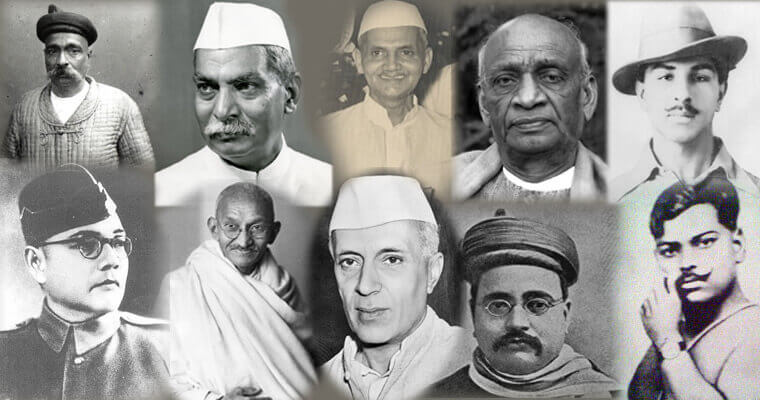

Freedom Fighters of India
India got its independence on the 15th day of August of 1947, this day is the result of the freedom struggle fought by our great heroes. A series of struggles, movements, battles, and uprisings took place to make India independent through the contribution of great freedom fighters. Great freedom fighter such as Bal Gangadhar Tilak, Dr. Rajendra Prasad, Dr. Lal Bhadur Shastri, Sardar Vallabh Bhai Patel, Mahatma Gandhi, Jawahar Lal Nehru, and other freedom fighter has contributed a lot. There is no parameter to identify the top 10 Freedom Fighters of India. Every Freedom Fighter in India has played a major role to got freedom to the country and sacrificing their life. Here, we are sharing the list of freedom fighters of India and their massive contribution to the country's struggle for getting Independence for India after a lot of effort.

List of Freedom Fighters of India & their Contributions
The most well-known Indian freedom fighters were Mahatma Gandhi, Bhagat Singh, Subhas Chandra Bose, Jawaharlal Nehru, Chandra Shekhar Azad, and a few others. The names of the most popular freedom fighters of India are mentioned below-
Freedom Fighters of India and their Contributions
Every Indian Freedom Fighter had his own contribution to making India a beautiful place to live. The below table gives a brief about the contribution of the most popular freedom fighters of India
Famous Freedom fighters of India
Know a brief about a few of the Freedom Fighters of India and their role and contributions to Indian freedom from Britain, which have been discussed in the below section.